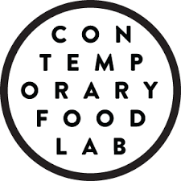
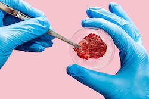
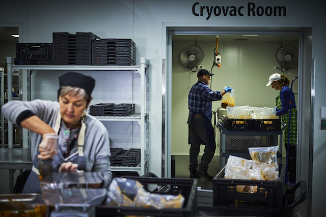
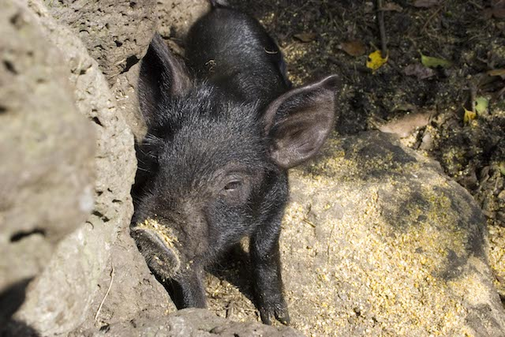
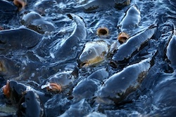
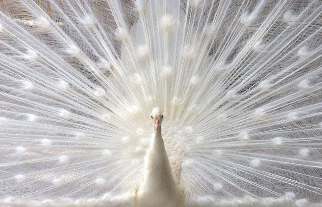
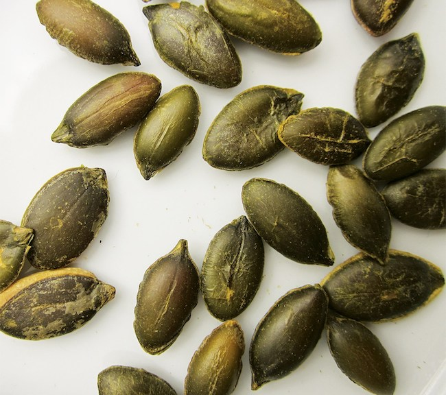
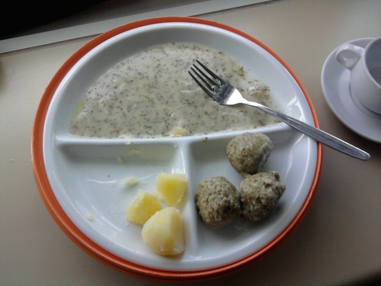

Contemporary Food Lab

The Contemporary Food Lab is a multi-disciplinary platform, founded by Ludwig Cramer-Klett, to support innovative ideas in food. It encompasses the CFL Journal, CFL Academy Workshop, CFL art exhibition space, and the award-winning Katz Orange restaurant, Panama Bar, and Tiger Bar in Berlin.
Here are some of my articles published in the CFL Journal.

Lab-made Meat is Here: Are We Going to Eat It?
Contemporary Food Lab
Two companies have claimed that their lab-made meat products will be on supermarket shelves by the end of the year. Whether you like the idea or not, meat made by scientists through cellular agriculture is here. So will it save the world? Or will it be a failed fad?

FareShare: A New Model for Fighting Food Waste
Contemporary Food Lab
Despite growing public awareness, landmark legislative change, and the work of many amazing grassroots organisations, the amount of perfectly good food being thrown away in the world continues to increase, rather than diminish. So maybe it’s time to approach the problem in a new way. And FareShare, an Australian charity, offers a potential model for doing just that.

Eating Animals to Save Them: An Absurd Solution to our Meat Problem?
Contemporary Food Lab
We know that our meat-eating habits are not doing doing our environment, or our future food security, any favours. But perhaps, rather than tearing it all down and trying to start again, we can change the meat industry from within. By focusing on rediscovering and reviving localised livestock breeds.
 The Miller's Tale: A Visit to Orkney's Barony Mill
The Miller's Tale: A Visit to Orkney's Barony Mill
Contemporary Food Lab
It's sleek, it's self-sufficient, and it's totally sustainable. But it's nothing new. The Victorian, water-powered Barony Mill in Birsay, Orkney, simply keeps pumping out flour and beremeal in the same way it has since 1873.

Fish: Our Forgotten Friends
Contemporary Food Lab
While public opposition and outrage against the livestock industry has become more and more vehement, industrial fisheries don’t yet seem to attract the same scorn. Even though they could be even worse.

Our Complicated Love Affair With Refined Flour
Contemporary Food Lab
It's no secret that we have fallen out of love with white flour. But getting a divorce now, after 150 years together, is a lot harder than we think.
 The Good, the Bad, and the Spicey: How Spices Fell out of F(l)avour
The Good, the Bad, and the Spicey: How Spices Fell out of F(l)avour
Contemporary Food Lab
For centuries, spices were extremely valuable items that drove global commerce and determined the fate of millions. Now, they sit on our shelves, largely anonymous, for months. Or even years. How did spices fall so far?

Saving Seeds for the Future: Not All About Doomsday
Contemporary Food Lab
Not all seed banks are vaults to be called upon only in the case of catastrophe. Many are living, active projects rooted in the here and now. At Terra Madre Salone del Gusto last month, representatives from numerous seed-saving initiatives across the world met in Turin to share their stories. Here are a few.
 Potato Packaging Set to Challenge Bioplastics?
Potato Packaging Set to Challenge Bioplastics?
Contemporary Food Lab
What can possibly be exciting about a tub of starchy water sitting in the corner of a sterile factory? Quite a lot, actually.

Hospital Food - It's Even Worse than you Think
Contemporary Food Lab
If you thought that the tasteless plodge of grey sludge was the worst part about hospital meals. Think again.